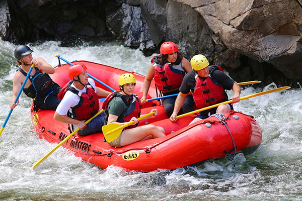
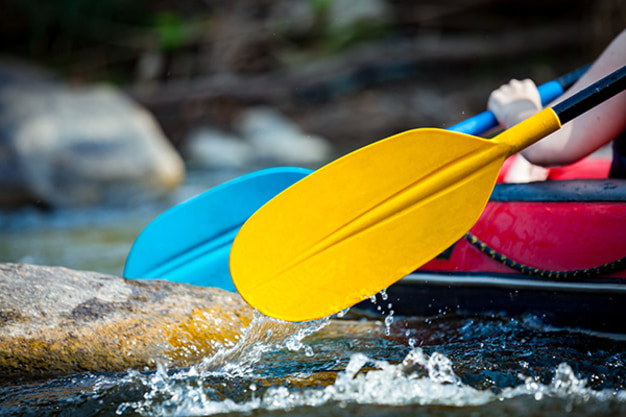
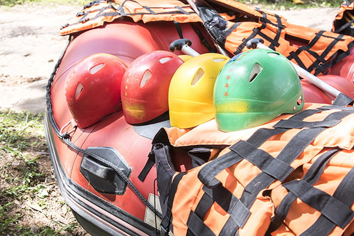
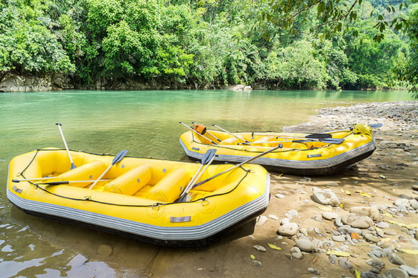
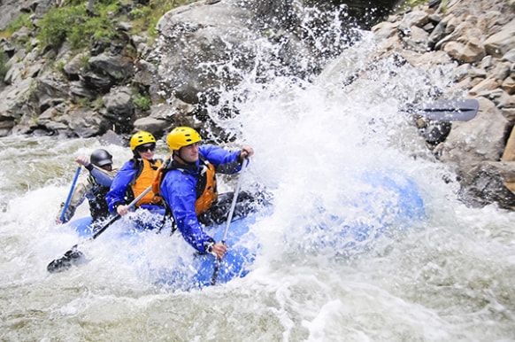

Our mission is to provide thrilling and safe rafting experiences while fostering a love for the
great outdoors.
History
Founded in 2010, White Water Rafting Adventures started with just two rafts and a dream to share the
excitement of the river with outdoor enthusiasts. Over the years, we have grown into a full-service
adventure
company with a fleet of rafts, experienced guides, and hundreds of happy customers every season.
Our founders were passionate river guides who wanted to create a company that combined fun, safety,
and respect for nature. Today, we continue to train every guide to the highest standards, use
top-quality
equipment, and follow eco-friendly practices to preserve the beauty of the rivers we explore.
Whether you're a beginner looking for your first rafting adventure or a thrill-seeker chasing the
biggest rapids, our history proves one thing: we know how to create unforgettable experiences on the
water.
Adventure Awaits You!

Big Mallard Rapids

Los Dientes del Diablo

Half Day Adventure

Family Fun Trip

Extreme Rapids